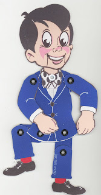

Friendly Freddy
6/18/2010
{kind=link}

It was in the early '70s when Dave Miller created a cute little cartoon character he dubbed, "Friendly Freddy". This little fellow with his now easily recognized smiling face has appeared in many Maher Publications, including the Maher Course, Newsy Vents, and throughout the pages of Ventriloquism In A Nutshell And elsewhere.
Now, in 2010, Dave has designed and handmade a handful of Friendly Freddy paper puppets to be given away exclusively by drawings on this blog! They'll be a rare prize, and if you are lucky enough to win one, you'll own a unique piece of Miller/Maher history. Today we've drawn the names of three individuals who will each be awarded a Friendly Freddy Paper Puppet. The winners are: Bill Bingham, Susan Mitchell, and Paul Zaloom. (Contact Mr. D to claim your prize.)
Now, in 2010, Dave has designed and handmade a handful of Friendly Freddy paper puppets to be given away exclusively by drawings on this blog! They'll be a rare prize, and if you are lucky enough to win one, you'll own a unique piece of Miller/Maher history. Today we've drawn the names of three individuals who will each be awarded a Friendly Freddy Paper Puppet. The winners are: Bill Bingham, Susan Mitchell, and Paul Zaloom. (Contact Mr. D to claim your prize.)